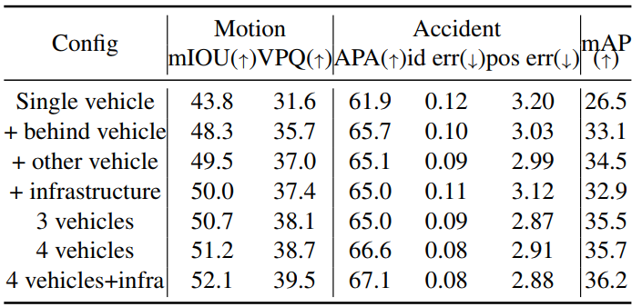
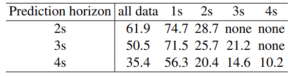

V2XFormer
-
Network details of the proposed V2XFormer. We use the three-V2X-agent setting consisting of ego AV, AV, and Infra for
illustration. V2X agents in V2XFormer utilize a shared-weight BEV extractor to extract BEV features based on multi-view camera
observation history within the previous N frames. These features are spatially wrapped and aligned with the BEV features from the ego
vehicle before being concatenated along the channel dimension. For the V2X fusion part, here we utilize a simple yet effective average
pooling over channel dimension to generate the aggregated BEV feature, which is then fed into different task heads to get prediction results.
Experiment

-
Performance comparison between the single-vehicle model and V2XFormer with different V2X configurations.
We can see that V2XFormer with different V2X configurations significantly outperform the single-vehicle baseline in all three tasks.
In addition, V2X-infra yields the best motion prediction performance compared to other 2-agent configurations due to the broad visibility provided
by the infrastructure’s relatively high sensor mounting position.
Moreover, gradual incorporation of more V2X agents for communication can lead to gradual improvement in performance across all tasks.
-
Performance on motion mIoU and accident prediction accuracy (APA) at different Time-To-Collision (TTC).
The V2X models outperform the singlevehicle model for motion and accident prediction, especially when TTC is shorter. However, for the 2s TTC data, the accident prediction task is
challenging for all models, with the V2X-5agents model even performing worse than the single-vehicle model.
-
Performance on motion mIoU and accident prediction accuracy (APA) v.s. accident visibility.
We divide the evaluation data based on accident vehicle/pedestrian visibility from the ego vehicle side and
define a sample with over half of its observation frames having invisible accident vehicles as an invisible sample for accidents.
The performance gap between V2X models and the single-vehicle model is significantly larger when there is limited accident visibility from the ego
vehicle side, on both motion prediction and accident prediction tasks.

-
Performance with longer prediction horizons at different Time-To-Collision (TTC) for accident prediction accuracy (APA).
We choose the single-vehicle model as the baseline and conduct experiments on predicting longer future motion.
The model that predicts longer future motion achieves worse accident prediction accuracy compared to the model with a shorter prediction horizon.
However, models with longer prediction horizons can predict accident this earlier due to their design.
These results suggest a trade-off between predicting longer future horizons and achieving satisfactory overall performance.

-
Sim2real experiment on motion prediction (VPQ) and 3D object detection (mAP).
For the single-vehicle model trained on DeepAccident, we fine-tune it for five epochs on nuScenes and compare it with the original BEVerse-tiny model that is only trained on nuScenes for both motion prediction and 3D object detection tasks.
The model trained with both datasets achieves 1.9 higher mAP and 0.8 higher VPQ on the nuScenes validation dataset,
which demonstrates the usefulness of our proposed DeepAccident dataset for real-world scenarios.
Qualitative results
-
Qualitative comparison between the single-vehicle model and the V2X-5agents model on 3D object detection and motion prediction tasks.
The red circles on motion figures indicate the front right area behind a wall with occlusion. The single-vehicle model failed to predict objects and their motions in that area while the V2X-5agents model succeeded.
This demonstrates the enhanced prediction and perception capabilities of the V2X models over the single-vehicle baseline.
-
More qualitative results of the single-vehicle model and the V2X-5agents model across various scenarios.
The areas marked by red circles indicate the accidents happening places.
The V2X-5agents model shows superiority over the single-vehicle model for both motion and accident prediction.